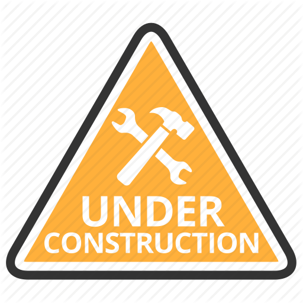

運算思維概述
運算思維（Computational Thinking）原是一種電腦科學家常用來解決問題的方式。在數位資訊科技被視為人類社會活動的重要組成元素後，許多教育學者認為運算思維應被視為不同學科的每個人（不僅是電腦科學家）都應該學習的一套通用思考方式。能應用運算思維來解決日常生活中的實際問題被視為二十一世紀的一項重要技能。
運算思維（Computational Thinking）原是一種電腦科學家常用來解決問題的方式。在數位資訊科技被視為人類社會活動的重要組成元素後，許多教育學者認為運算思維應被視為不同學科的每個人（不僅是電腦科學家）都應該學習的一套通用思考方式。能應用運算思維來解決日常生活中的實際問題被視為二十一世紀的一項重要技能。
電腦可以用來幫助我們解決問題。但是，在解決問題之前，我們需要了解問題本身及其解決方法。運算思維技術有助於完成這些任務。運算思維由四個核心能力組成：問題拆解（Decomposition）、抽象化（Abstraction）、模式識別（Pattern Recognition）和演算法設計（Algorithm Design）。 本課將簡要介紹運算思維的這四個基石，並展示如何將它們作為解決問題過程的一部分。
| 學生應學習 | 學生應能 |
|---|---|
| 第一節 運算思維簡介 |
|
| 第二節 問題拆解 |
|
| 第三節 抽象化 |
|
| 第四節 模式識別 |
|
| 第五節 演算法設計 |
|
 儘管運算思維源自電腦科學，但其解決問題的過程在不同的領域亦被廣泛應用。本課將簡要介紹運算思維的思考方式在數學，英語語言，科學和社會學科的範例。對個人而言，學習運算思維至關重要。只有在理解電腦世界的工作原理後，才能應用電腦的威力解決艱難的問題。